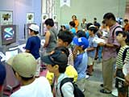
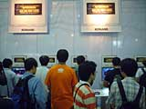
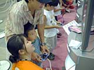
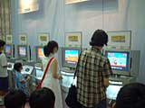
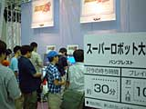

| ● バトルネットワーク ロックマン エグゼ 2 カプコン |
 すっかりおなじみのロックマンシリーズに、新しい世界観とゲーム性を築き上げた前作、『バトルネットワーク ロックマンエグゼ』の続編です。電子機器の中にロックマンを送りこみ、バトルチップを使って敵を倒していく、という基本システムは変わりませんが、今作ではバトルシステムがさらに進化し、より戦略性が高まっているようです。また、ロックマンの色や姿が変化するスタイルチェンジシステムも搭載。自分だけのロックマンが作り出せるかもしれませんね。
会場の体験コーナーは、小学生の男の子たちでいっぱいでした。しかも、みんな慣れた様子でサクサクとプレーを進めています。やっぱりロックマンって、男の子たちのヒーローなんだなぁ、とあらためて感心してしまいました。
|
| ● 逆転裁判 カプコン |
この作品の主人公は、なんと新米弁護士!? プレーヤーは、その新米弁護士として、法廷で依頼人の弁護を行ないます。つまり、このゲームのテーマは裁判。しかも、プレーヤーは真犯人の顔を最初に見ることができるのです。その真犯人を追い詰め、無実の依頼者を救うには、法廷で証人たちの偽証(ウソ)を暴いていくしかありません。こんな変わったゲーム、今まで見たことないですよね。
物語は全部で４つあり、裁判で依頼人の無罪が確定すると、次の物語に進めるそうです。今までにないゲームシステムのためか、体験コーナーではスタッフに質問しながらゲームを進める方もいらっしゃったようです。小さな男の子も、お父さんに聞きながら遊んでいました。ちょっと困った様子のお父さん。見ていて微笑ましい光景でした。
|
| ● グラディウスジェネレーション コナミ |
 昔からのゲーマーにとって、『グラディウス』といえばもはやシューティングゲームの代名詞。その最新作が、ゲームボーイアドバンスで登場です。アドバンスの美しいグラフィックとワイド画面は、横スクロールシューティングのグラディウスに最適！ 往年のファンはもちろん、グラディウスになじみのない若い世代にもおすすめできる１作です。
さらに今作では、初心者向けのデモプレイヒント、上級者向けのチャレンジングステージ、そして隠しモードなど、新機能も満載。やり込みがいがありそうですね。
今回の体験コーナーでは２面まで遊べるようになっていましたが、10分間でクリアーしてしまう方も結構いらっしゃたようで、スタッフも感心してました。
|
| ● ぐるロジチャンプ コンパイル |
 多くの名作パズルゲームを世に送り出してきたコンパイルから、新たな挑戦状です。今回は、クイズとパズルが融合した新感覚の思考型パズルゲーム。フィールド上の光っている場所にブロックを撃ちこみ、見本どおりの絵を完成させましょう。形の合わないブロックは回転させたり、吸いこんだりしないと置けないので、よーく考えて進めないと、なかなかクリアーできませんよ。問題数は300問以上もあり、ステージレベルも１０段階以上！ さらに、通信ケーブルを使って、１カートリッジで４人まで対戦できます。
体験コーナーでは全75問を遊べるようになっています。意外なことに小学生低学年の子供たちも結構プレイされてましたが、スタッフの方に聞くと、レベル１の10問を、みなさん軽くクリアーされていかれるそうです。こういうゲームって、子供たちのほうが飲み込みが早いのかな？
|
| ● ソニック アドバンス セガ |
 誕生から10周年を迎えたソニック・ザ・ヘッジホッグが、ゲームボーイアドバンスの中を駆け回ります！ そのスピード感と爽快感は、横スクロールアクションになっても健在ですね。昔からのファンは、なんとなく元祖ソニックを思い出すんじゃないかな。
今作では、主人公のソニックのほかに、おなじみの仲間テイルズ、ナックルズ、エミーの３人も登場。好きなキャラクターでプレーすることができます。それぞれ得意なアクションが違うので、キャラクターを変えて何度でも遊べちゃいます。
遊んでいる子供たちの中には、ソニックシリーズは初めて、という女の子もいましたが、愛らしいソニックが、すっかり気に入ったようです。それにしても、みんな上手だなぁ。
|
| ● スーパーロボット大戦Ａ バンプレスト |
 完全オリジナルストーリーを引っさげ、あの『スパロボ』シリーズ最新作が、ついにゲームボーイアドバンスに登場です。気になる今回の新規参戦作は「機動戦艦ナデシコ」、「機甲戦記ドラグナー」の２作品。さらに、ファンからの要望が多かったという「機動武闘伝Ｇガンダム」が復活。また、大好評の合体攻撃や援護行動システムといった戦闘システムに加え、新しくシールド防御システムやカウンターシステムを搭載。より戦術性が高まっています。今作も、ドラマティックなストーリーと迫力の戦闘シーンで、プレーヤーを楽しませてくれそうですよ。
子供たちの姿が目立つゲームボーイアドバンスの体験コーナーにあって、ここだけは比較的年齢層が高めですね。だいたい、高校生から30歳くらいまでの方が多いようですが、やはりスーパーロボット世代にはたまらないゲームなんでしょうね。ステージ制限がないので、みなさん10分間でできるだけ先へ進もうと、夢中で遊んでらっしゃいました。
|